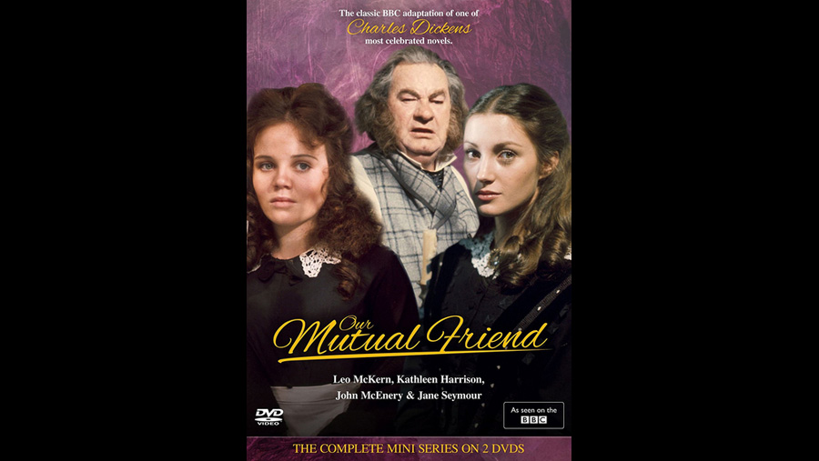

1976

CAST
John Rokesmith
-
John McEnery
Bella Wilfer
-
Jane Seymour
Eugene Wrayburn
-
Nicholas Jones
'Rogue' Riderhood
-
John Collin
Nicodemus Boffin
-
Leo McKern
Lizzie Hexam
-
Lesley Dunlop
Gaffer Hexam
-
Duncan Lamont
Mortimer Lightwood
-
Andrew Ray
Henrietta Boffin
-
Kathleen Harrison
Reginald Wilfer
-
Ray Mort
Jenny Wren
-
Polly James
Bradley Headstone
-
Warren Clarke
Sloppy
-
David Troughton
Mrs. Wilfer
-
Patricia Lawrence
Lavinia Wilfer
-
Debbie Ash
Abbey Potterson
-
Joan Hickson
Mr. 'Dolls'
-
Edmond Bennett
Mr. Venus
-
Ronald Lacey
Mr. Riah
-
Harold Goldblatt
Silas Wegg
-
Alfie Bass
Charley Hexam
-
Jack Wild
Night Inspector
-
Brian Wilde
Bob Gliddery
-
Alan Collins
Mrs. Podsnap
-
Jo Warne
Pleasant Riderhood
-
Lois Baxter
Anastasia Veneering
-
Liza Ross
Hamilton Veneering
-
John Golightly
Melvin Twemlow
-
Jeffrey Gardiner
Betty Higden
-
Hilda Barry
Rev. Frank Milvey
-
Christopher Hodge
John Podsnap
-
John Savident
Lady Tippins
-
Agnes Lauchlan
Mr. Boots
-
Richard Stilgoe
Tom Tootle
-
James Appleby
Blight
-
Sean Clarke
Retainer
-
John Baker
Surgeon
-
Norman Ettlinger
Juryman
-
Stuart Latham
Doctor
-
Garth Watkins
Footman
-
Tom Owen
CREATIVE TEAM
Director
-
Peter Hammond
Screenplay
-
Donald Churchill / Julia Jones
Music
-
Carl Davis
PRODUCTION
A British television serial which ran during 1976 for a total of seven episodes. It was directed by Peter Hammond. The adaptation was by Julia Jones and Donald Churchill. Their version excludes some minor characters in order to convey the action within the limitations of a seven-episode structure, but was praised by British reviewers for faithfully reproducing the mood and atmosphere of the original novel.